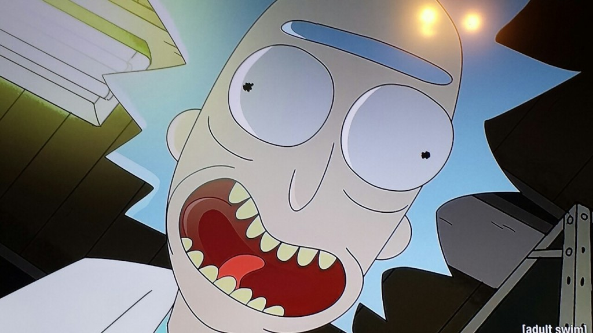

WHO IS HE?
Co-lead character of Rick and Morty
Richard "Rick" Sanchez is the co-eponymous main character and leading protagonist of the show. He is a genius scientist whose alcoholism and reckless, sociopathic behavior are a source of concern for his daughter's family over the safety of their son, Morty. He is voiced by Justin Roiland.
Biography
Not much is known about Rick's life before his current state seen in the show except for a few things that have been vaguely mentioned in the series. It has been mentioned multiple times that Rick has been absent from the family for at least fourteen years and it wasn't until about just over a month before the events of the Pilot episode when Rick finally returned to the Smith house on the date of January 18th. The reason for his absence is unknown to the rest of the family.
taken from: Rick and Morty Wiki